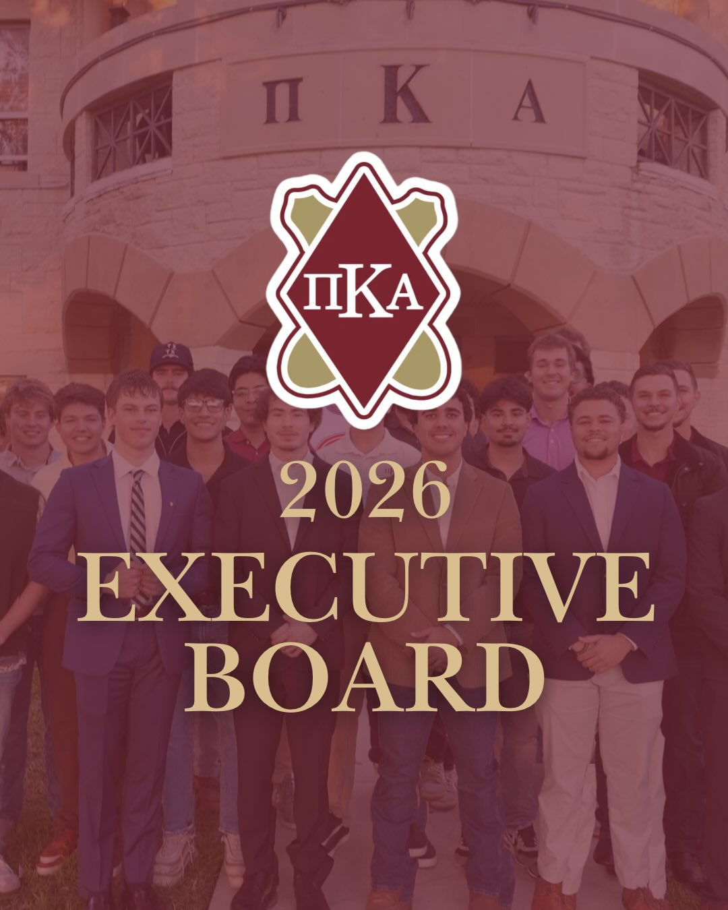

Campus Life
Chapter Leadership
Undergraduate officers guide operations, member development, recruitment, academics, service, and the Alpha Omicron experience.

2026 Executive BoardView the announcement on InstagramCampus Life
Undergraduate officers guide operations, member development, recruitment, academics, service, and the Alpha Omicron experience.

2026 Executive BoardView the announcement on Instagram